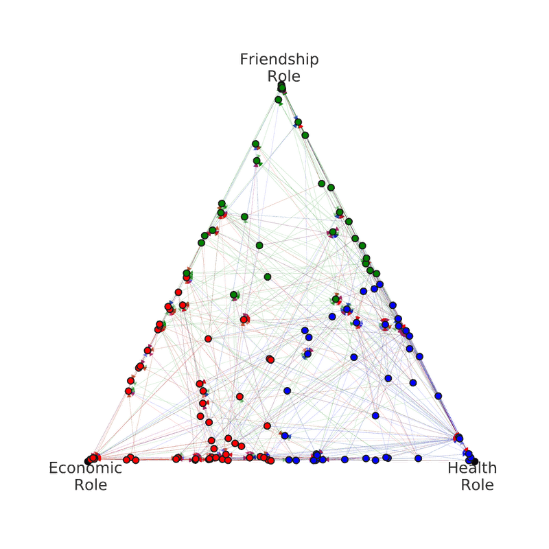

Nature Communications · 2026
Modeling roles and trade-offs in multiplex networks
Nature Communications, 2026
Read paper
Fig. Role mixtures in a heterogeneous multiplex networkYale Institute for Network Science · Human Nature Lab
Postdoctoral Researcher working at the intersection of machine learning, graph representation learning, and the science of social networks.
— New Haven, CT
I am a postdoctoral researcher at the Yale Institute for Network Science, working in the Human Nature Lab. My research develops principled, interpretable models of complex networks — drawing on latent variable models, archetypal analysis, and modern graph representation learning.
I am especially interested in self-explainable models that recover meaningful structure from raw network data: communities, roles, polarization, and the latent geometry that organizes them. These tools speak directly to questions in computational social science, network polarization, and biological network analysis.
Nature Communications, 2026
Read paperProceedings of the 29th International Conference on Artificial Intelligence and Statistics (AISTATS), PMLR — Spotlight
Read paperInternational Conference on Learning Representations (ICLR), 2025
Read paperProceedings of the 26th International Conference on Artificial Intelligence and Statistics (AISTATS), PMLR
Read paper